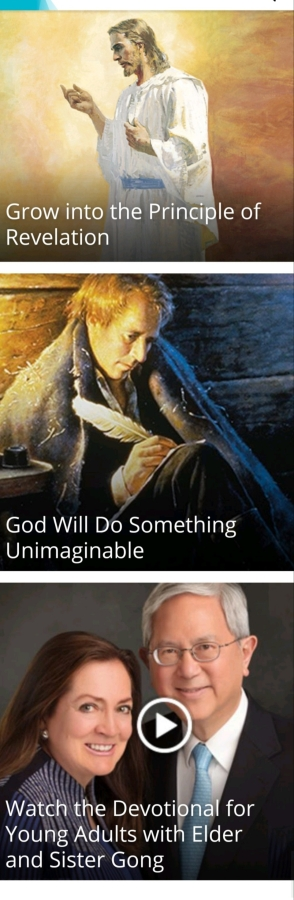
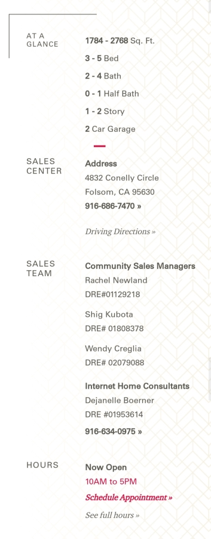
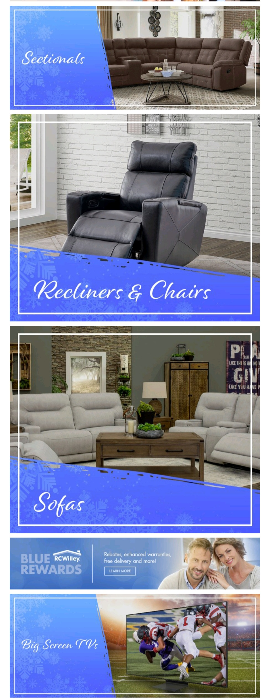

Repetition
The Church of Jesus Christ
of
Latter-Day Saints

The three top videos are highlighted at the top of the page with repetition of the type font, size, and color. The remaining articles are all the same size images and share the same type font, size and color.
Alignment
Taylor Morrison Homebuilders
As you scroll down the page to the 'At A Glance' section of the page that includes the details of the homes for sale as well as their location, hours, and contact information. Each section has a heading left aligned in the first column, then all the data for each heading has a strong left alignment in the second column.
Contrast
R.C. Willey
Each shopping category that you are looking for is represented by a picture of an item in the category. Those pictures are highlighted by a high contrast blue section where the label for that category resides.